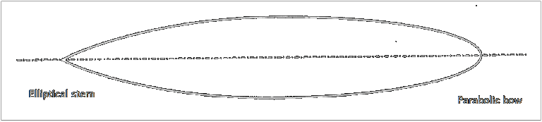

Communication Links

(a)

(b)

(c)
(b)
(c)
Figure 2. Shape of (a) oblate spheroid [3], (b) ideal streamlined hull [4] and (c) modern submarine hullform with cylindrical mid body [4].
\begin{equation} \tau_4 = 5.15 \; 10^{-7} \: e^{\frac{1590}{T+273}} \end{equation}
References
- [1] L. Qihu, Digital Sonar Design in Underwater Acoustics, Beijing: Springer-Verlag Berlin Heidelberg, 2012, pp. 543-552.